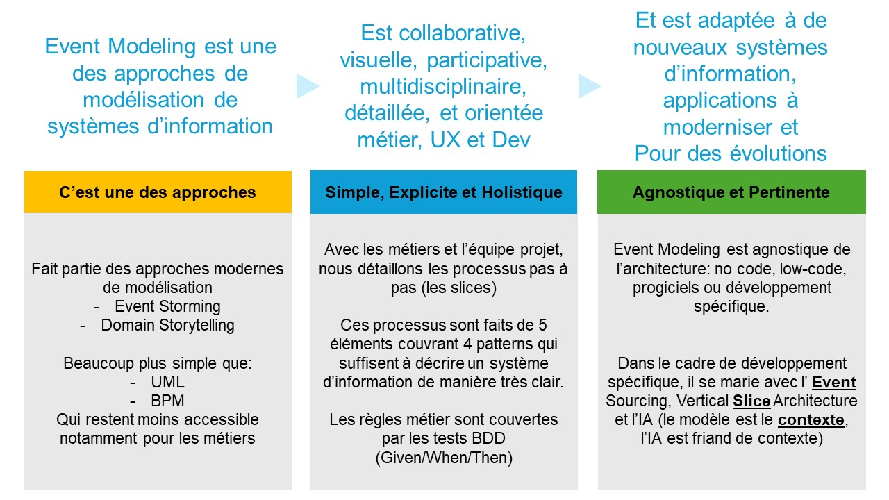
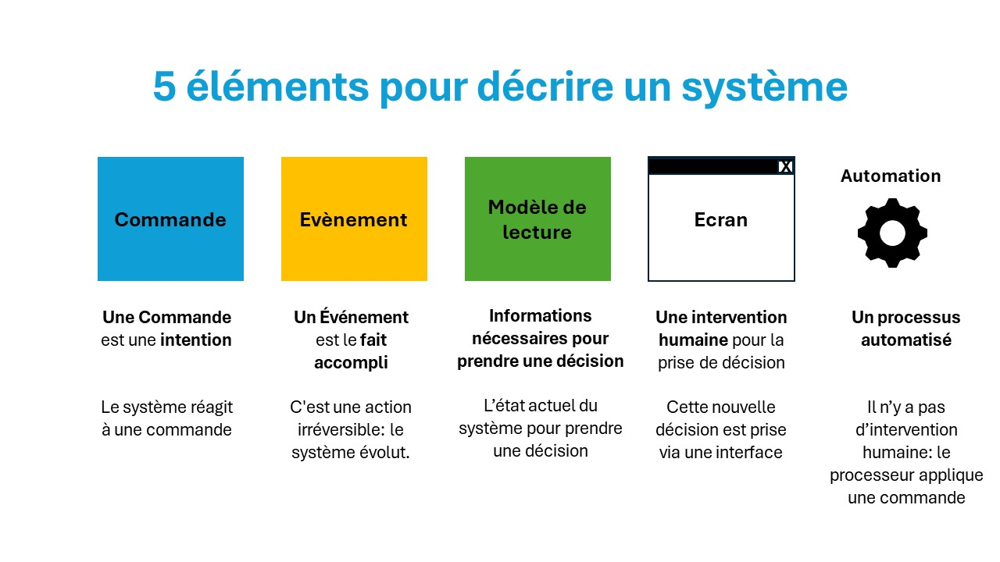
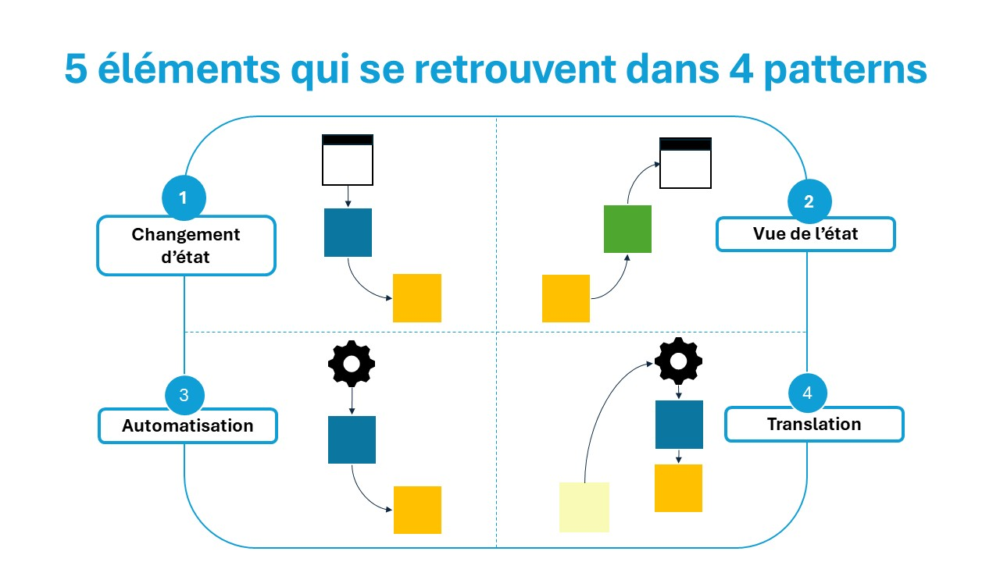
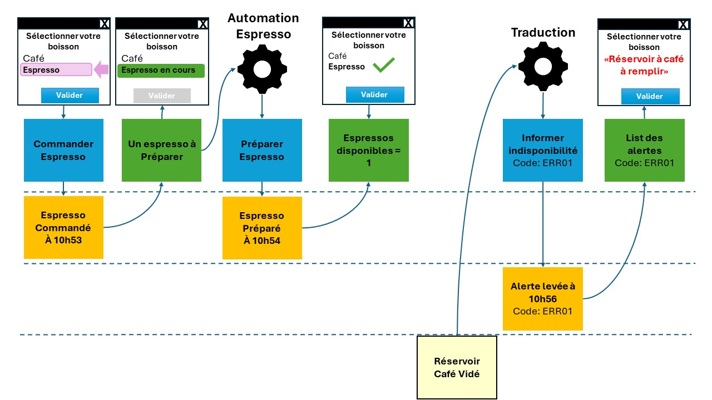
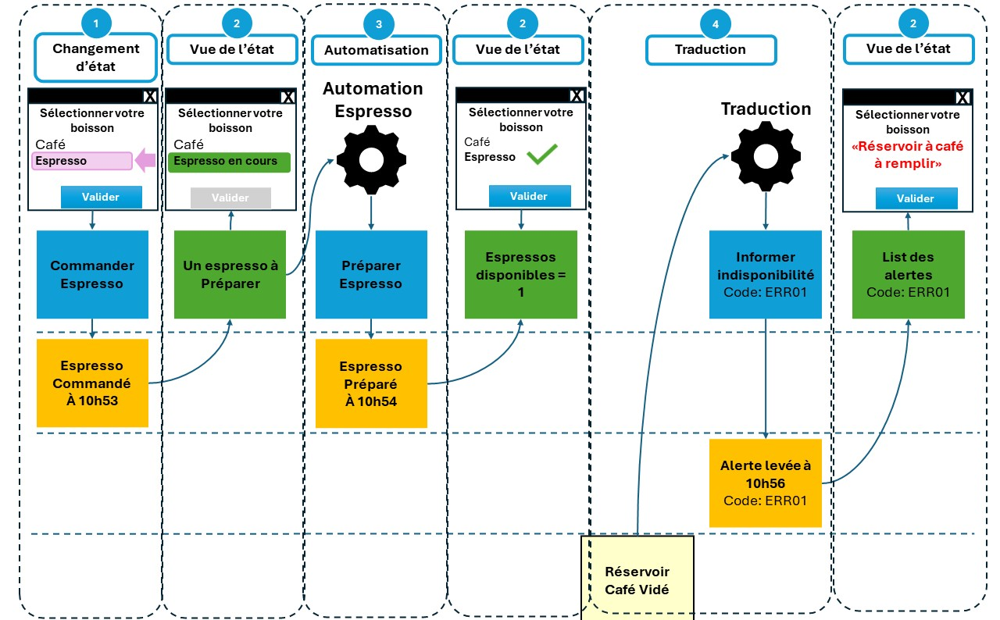
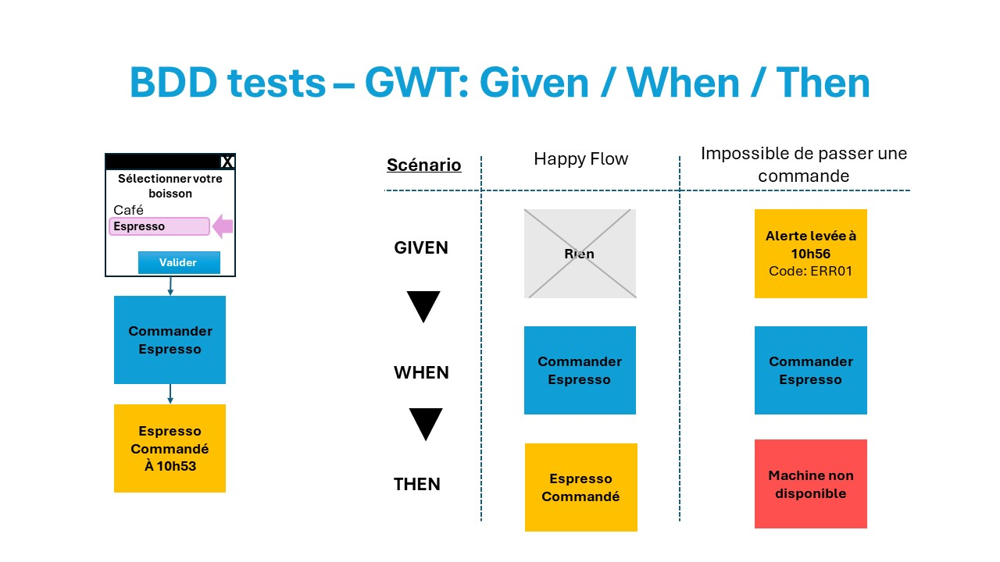

Bienvenue sur le site Event Modeling en Français
L'objectif de ce site est de vous aider dans votre chemin vers Event Modeling et Event Sourcing
Event modeling créé par Adam Dymitruk et évangilisé par Martin Dilger
Event Modeling permet collaborativement avec les métiers et les équipes projet de modéliser un système d'information
Event Modeling (EM) en une diapositive
Event Modeling (EM) est une approche de modélisation d'un système d'information...

Les quelques étapes pour animer un atelier de facilitation d'Event Modeling
- La toute première activité est un storming autour des évènements métier
- Puis un premier processus est choisi - de bout en bout, sans chemin alternatif
- Le processus est décrit grâce à 5 éléments: cela suffit pour décrire un système d'information
- Chaque étape du processus est appelée "slice": l'implémentation d'une des 4 patterns
- Ensuite on itère par processus, chaque processus ayant entre 3 à 30+ slices (étapes)
Un Premier Modèle
Un processus simple utilisant 5 éléments
Ce processus est composé de 6 slices, chaque slice étant l'implémentation d'un des 4 patterns
Et pour chaque slice, nous ajoutons les tests Given/When/Then afin de couvrir les règles métier
La puissance de l'Event Modeling est sa simplicité: l'ultime simplicité
Les forces de l'Event Modeling vont au-delà du modèle :
- Permet une implémentation utilisant Event Sourcing...
- Permet une gestion de projet simple...
- Permet une documentation vivante
- Permet d'utiliser le pattern Vertical Slice Architecture...